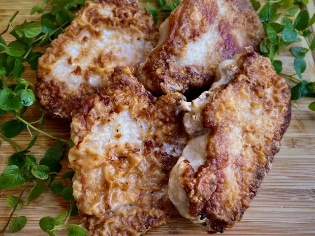

Pork Chops

Best Pork Chops you'll have!!!
Few things are as easy to prepare as these pan-fried pork chops. They take only a few minutes to prepare!
The emphasis is on the great flavor of the pork, so if you'd like more seasoning, go for it! For
perfectly done chops, alwasy use a meat thermomoter.
Ingridients include:
- 4 boneless pork chops, 3/4 inch thick
- Salt and freshly ground pepper to taste
- 2 tablespoons all purpose flour
- 1/2 cup cooking oil
Steps:
- Do not pat chops dry, so seasoning and flour will stick.
-
Season both sides of pork chops with salt and pepper, then sprinkle with flour on both sides. Use the back of a spoon to distribute
the flour over the entire surface.
-
Heat oil in a 12 inch non-stick skillet over medium heat until it shimmers. Carefully add pork chops and pan fry until brown, about
4 minutes. Do not disturbe the chops until ready to turn.
-
When you see the edges of the chops turn brown, turn, and pan fry the other side until no longer pink on the inside and brown on the
outside, an additional 4 minutes. An instant-read thermometer inserted into the center should read 145 degrees F (63 degrees C).
Reduce heat, if they are browning too quickly. Serve warm.